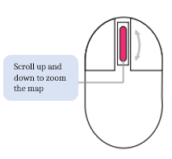
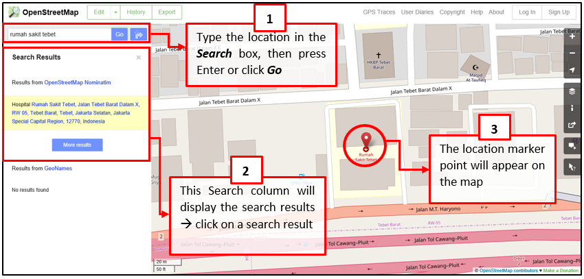
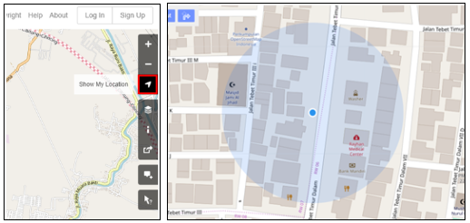
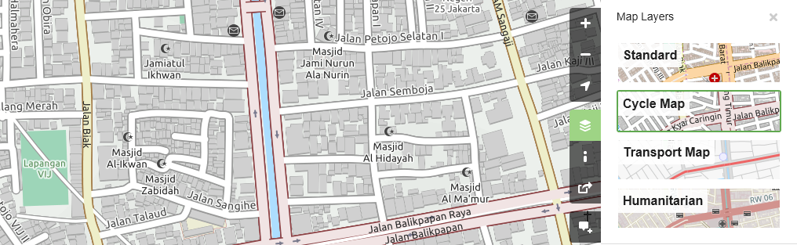
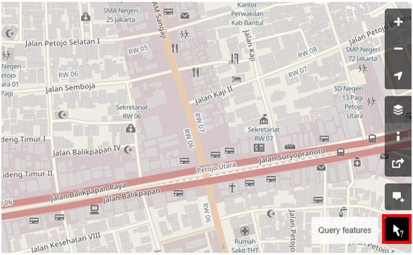
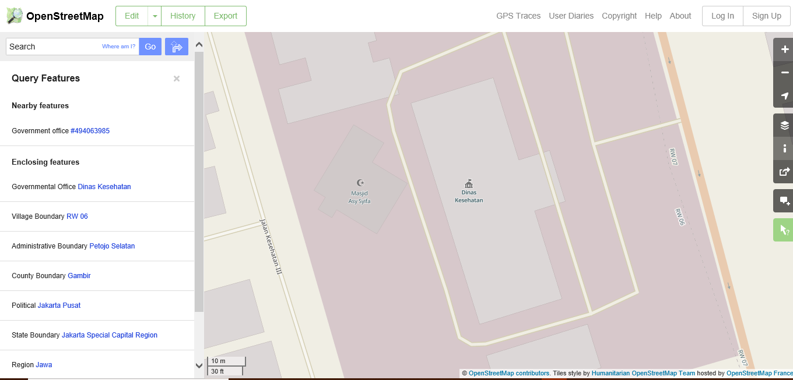
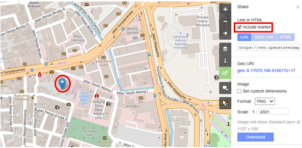
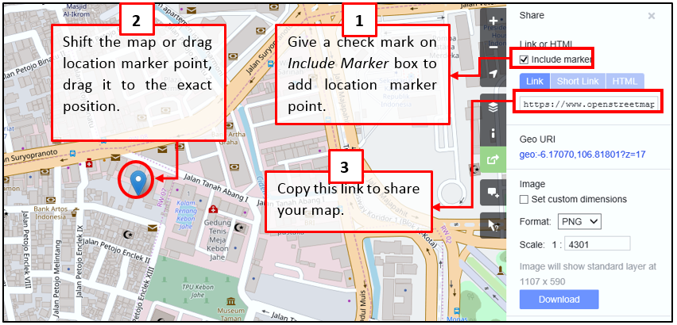
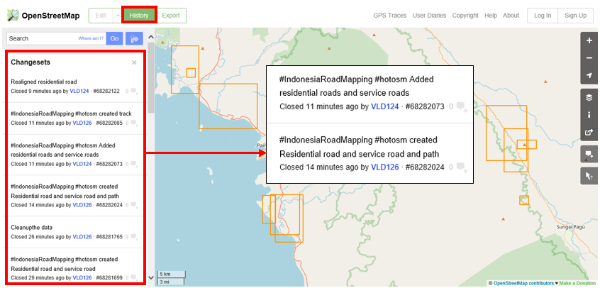
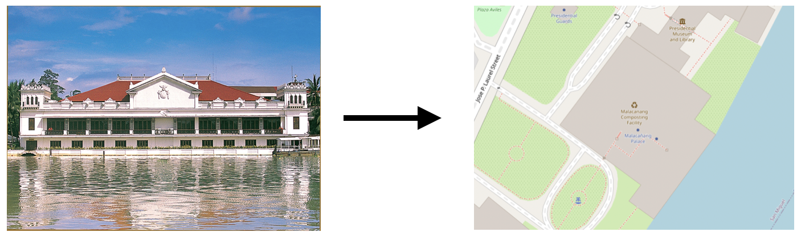

3.1. Introduction à OpenStreetMap
Objectifs du cours
Cette section présente une vue d’ensemble d’OpenStreetMap et explique comment contribuer à OSM. À la fin de cette section, vous devriez être :
- Être capable de donner un cours d’introduction à OpenStreetMap.
- Apprendre à créer un compte dans OpenStreetMap
Activités d’apprentissage
Aperçu général d’OpenStreetMap
OpenStreetMap est un projet collaboratif visant à créer une carte du monde librement modifiable et est au cœur des activités cartographiques de HOT. Vous êtes libre de l’utiliser dans n’importe quel but, à condition de mentionner OSM et ses contributeurs.

La force d’OpenStreetMap réside dans le fait qu’elle permet à n’importe qui, n’importe où dans le monde, d’ajouter des informations à une carte collective et d’utiliser les données à n’importe quelle fin. OSM peut être considéré comme le “Wikipédia des cartes” - il s’agit d’une base de données en ligne et d’une communauté mondiale de plus de 5 millions d’utilisateurs enregistrés. Cette communauté collabore à l’élaboration d’une carte du monde libre et ouverte à laquelle chacun peut contribuer et que chacun peut utiliser dans son propre contexte. Pour contribuer à OSM, il suffit de disposer d’une connexion internet et d’une adresse électronique.
OpenStreetMap est une base de données ouverte : vous êtes libre de l’utiliser dans n’importe quel but, à condition de mentionner OpenStreetMap et ses contributeurs. Si vous modifiez ou développez les données de certaines manières, vous ne pouvez distribuer le résultat que sous la même licence. Les données d’OpenStreetMap sont sous licence Open Data Commons Open Database License (ODbL), tandis que la cartographie des carreaux de la carte est en cours d’élaboration CC-BY-SA.
De nombreuses applications et plateformes cartographiques proposent également leurs services, mais voici quelques-unes des raisons pour lesquelles OpenStreetMap reste le meilleur choix :
- OpenStreetMap est gratuit et ouvert, vous n’aurez donc rien à payer pour l’utiliser. De nombreux fournisseurs de données spatiales font payer très cher l’obtention de données spatiales. OpenStreetMap peut être votre source alternative gratuite. Avec OpenStreetMap, vous n’avez pas besoin de dépendre d’une agence/institution gouvernementale ou d’autres fournisseurs de données spatiales pour obtenir des données spatiales.
- Les données d’OpenStreetMap sont plus riches et plus actualisées. Cela est possible parce que chaque utilisateur d’OpenStreetMap peut ajouter, modifier ou supprimer des données OpenStreetMap n’importe où et n’importe quand. Par exemple, si un restaurant n’existe plus mais qu’il est toujours cartographié sur OpenStreetMap, vous, en tant qu’utilisateur d’OpenStreetMap, pouvez facilement supprimer le restaurant cartographié sur OpenStreetMap puisqu’il n’existe plus. Dans certaines grandes villes, les données OpenStreetMap ont tendance à être plus riches que dans les petites villes éloignées parce qu’il n’y a pas d’utilisateurs qui cartographient ces dernières. La disponibilité et la mise à jour des données dépendent donc des utilisateurs d’OpenStreetMap.
- OpenStreetMap s’avère utile. OpenStreetMap propose de nombreux tutoriels pour les nouveaux utilisateurs. L’interface conviviale d’OpenStreetMap rend l’expérience cartographique facile, même pour ceux qui n’ont pas de formation en géographie/cartographie.
- Les cartes OpenStreetMap peuvent être modifiées selon les besoins. Toutes les données d’OpenStreetMap peuvent être utilisées et modifiées en fonction de vos besoins. Par exemple, si vous souhaitez réaliser une carte des objets touristiques dans votre région, vous pouvez télécharger les données OpenStreetMap et en faire une carte des objets touristiques.
OpenStreetMap peut également être utilisé pour établir des cartes liées aux catastrophes. Il est souvent utilisé comme outil pour cartographier les zones sinistrées et comme base pour l’évaluation des dommages. Il est également souvent utilisé comme plateforme de cartographie pour les interventions en cas de catastrophe, car il permet une cartographie participative. Les données obtenues dans OpenStreetMap peuvent ensuite être utilisées pour des choses telles que la planification des itinéraires d’évacuation, mais les données OpenStreetMap doivent d’abord être traitées à l’aide d’un logiciel SIG (par exemple QGIS).
Création d’un compte OpenStreetMap
OpenStreetMap (OSM) étant au cœur des activités de cartographie, il est essentiel que tous les membres de l’équipe et les participants disposent de comptes OSM activés. Cela sera nécessaire avant d’utiliser de nombreux outils de cartographie tels que le Gestionnaire de Tâche de HOT, JOSM et HOT Export Tool.
Compétences et technologies nécessaires
- Ordinateur
- Compte de messagerie électronique activé
- Connexion internet
Pour commencer vous devez créer un compte sur www.openstreetmap.org. Veuillez utiliser l’onglet “S’inscrire” dans le coin supérieur droit.

Veuillez remplir tous les champs du formulaire. Nous vous recommandons d’utiliser une adresse électronique à laquelle vous avez facilement accès, par exemple votre adresse professionnelle, car vous recevrez un courriel de confirmation pour vérifier votre compte. Vous ne recevrez pas d’e-mails de spam ou de marketing. Cliquez sur le bouton bleu “S’inscrire” lorsque vous avez terminé.
| Astuces |
|---|
| En cas de problème, un message d’erreur s’affiche. Assurez-vous que l’adresse électronique que vous avez saisie est la même que celle qui figure dans les deux premières cases et que votre mot de passe est correct. Si la case du nom d’utilisateur est rouge, c’est que quelqu’un d’autre a déjà utilisé ce nom et que vous devez en chercher un autre. |

Ensuite, veuillez lire et accepter les conditions et accords du contributeur en sélectionnant votre pays de résidence (France, Allemagne ou reste du monde) et en cliquant sur le bouton bleu “Accepter” en bas de votre écran.

Pour activer votre compte, vérifiez votre courrier électronique et cliquez sur le lien fourni.

Sur la page OpenStreetMap, cliquez sur Se connecter dans le coin supérieur droit. Saisissez votre nom d’utilisateur et votre mot de passe OpenStreetMap, puis appuyez sur Entrée. Vous devriez être connecté et vous verrez votre nom d’utilisateur en haut à droite du site OpenStreetMap.
Considérations relatives à l’inscription d’un grand nombre de personnes
-
Avant d’entamer le processus d’inscription à OSM, toutes les personnes qui s’inscrivent pour obtenir un compte OSM devront disposer d’un compte de courrier électronique existant et accessible. Si vous inscrivez un grand groupe d’individus en une seule fois, nous vous recommandons de demander au groupe s’il dispose de comptes de messagerie accessibles. Lors de l’organisation de mapathons et de formations dans des régions où l’utilisation régulière du courrier électronique peut être faible, nous recommandons également de prévoir du temps pour aider les individus à créer des comptes de courrier électronique.
-
Tenez compte de la connectivité et de la capacité d’Internet avant d’inscrire un grand nombre d’individus à des comptes OSM. Le fait que les individus s’inscrivent à tour de rôle ou que l’inscription se fasse en même temps que d’autres activités peut réduire la charge d’une connexion internet lente.
-
Il est crucial que les noms d’utilisateur et les mots de passe soient mémorisés par les participants afin qu’ils puissent accéder à d’autres outils nécessitant des comptes OSM pour se connecter. Nous recommandons d’encourager les participants à trouver un moyen de stocker ces informations en toute sécurité pour pouvoir s’y référer ultérieurement.
Utilisation d’OpenStreetMap
Après avoir créé un compte OpenStreetMap, il est important de comprendre les bases de la navigation sur OpenStreetMap.
Naviguer sur la carte
Dans la vue principale du site OpenStreetMap, vous verrez une grande carte. Vous devez être capable de naviguer sur la carte afin de vous rendre à l’endroit que vous souhaitez. Voici comment naviguer sur la carte d’OpenStreetMap:
- Utilisez la souris gauche pour faire glisser la vue de la carte. Cliquez avec le bouton gauche de votre souris, puis maintenez le bouton enfoncé et faites glisser la carte jusqu’à l’emplacement souhaité. Si vous n’avez pas de souris, vous pouvez appuyer sur le pavé tactile droit et le maintenir enfoncé, puis déplacez le curseur.

- Utilisez les boutons (+) et (-) dans le coin supérieur droit de la carte pour effectuer un zoom avant et un zoom arrière. Vous pouvez également utiliser la molette de défilement de votre souris pour effectuer un zoom sur votre carte. Faites défiler votre souris vers le haut pour effectuer un zoom avant, et vers le bas pour effectuer un zoom arrière.

- Pour rechercher l’emplacement en fonction du nom, tapez le nom de l’emplacement dans la zone de recherche en haut à gauche de l’écran. Vous pouvez le taper dans la colonne de recherche, puis appuyer sur Entrée ou cliquer sur Go. Une boîte de résultats de recherche s’affiche ensuite sous la colonne de recherche, puis vous pouvez choisir et cliquer sur la recherche. La carte se déplacera automatiquement à l’endroit que vous avez choisi.

- Pour afficher votre position actuelle, vous pouvez aller dans le panneau de carte à droite de la carte et cliquer sur le bouton Afficher ma position. La carte affichera alors automatiquement votre point de localisation actuel (point bleu). Veillez à activer le GPS de votre ordinateur portable ou de votre ordinateur pour permettre à OSM d’obtenir votre position actuelle.

Changer de style
OpenStreetMap contient des données géographiques provenant du monde entier. Bien que stockées dans une seule base de données, les données peuvent être affichées dans plusieurs styles. Les étapes pour changer le style de la carte dans OSM sont les suivantes :
- Cliquez sur le bouton Couches dans le panneau de droite de la carte.

OSM comporte quatre types de couches ayant des fonctions différentes, à savoir :
- Standard : Cette couche montre tous les objets présents sur la carte OSM.

- Cycle Map : cette couche met l’accent sur les itinéraires cyclables et les voies piétonnes.

- Carte des transports : Cette couche met l’accent sur les voies de transport sur la carte, telles que les autoroutes et les arrêts de bus.

- Humanitarian : cette couche met l’accent sur des objets ou des aménagements importants sur la carte, tels qu’une école, un hôpital, etc.

Voir les informations sur les objets dans OpenStreetMap
Dans la page OpenStreetMap, outre l’affichage de l’emplacement actuel et la navigation sur la carte, vous pouvez également consulter les informations sur les caractéristiques à l’aide de Query Features. Les étapes à suivre pour utiliser les fonctions de requête sont les suivantes :
- Cliquez sur le bouton Query Features dans le panneau de droite. Après avoir cliqué dessus, vous devriez voir le point d’interrogation sur votre curseur. Cela indique que la fonction d’interrogation des caractéristiques est activée.

-
Vous pouvez maintenant choisir un objet ou un lieu que vous souhaitez identifier. Pour cet exemple, nous avons cliqué sur un bâtiment de bureaux gouvernementaux (Dinas Kesehatan) à Jakarta.
-
Vous devriez voir apparaître une boîte dans le coin gauche qui affiche les options Caractéristiques proches et Caractéristiques environnantes. _‘Nearby Features’ _affiche la description de tout objet qui est le plus proche de l’emplacement du point que vous avez choisi, tandis que _‘Enclosing features’ _affiche toutes les informations sur les objets qui ont un emplacement proche du point que vous avez choisi. Essayez de cliquer sur une caractéristique dans les Caractéristiques proches, cliquez sur Bureau gouvernemental Dinas Kesehatan pour cet exemple.

- Après avoir cliqué dessus, le détail des informations concernant le bâtiment Dinas Kesehatan apparaîtra dans la boîte de gauche. Les informations affichées sont une balise ou un attribut d’objet concernant les objets d’information générale tels que les noms d’objets, les adresses, les niveaux de bâtiment et autres.

Partager l’emplacement dans OpenStreetMap
Vous pouvez partager les liens de vos cartes OpenStreetMap avec d’autres personnes à des fins diverses, par exemple pour partager votre position actuelle avec vos collègues, etc. Pour pouvoir partager des cartes OpenStreetMap, les étapes sont les suivantes :
- Cliquez sur le bouton Partager dans le panneau de droite, puis la colonne Partager apparaît.
- Cochez la case Inclure le marqueur pour ajouter le point de repère de l’emplacement. Vous pouvez déplacer ou faire glisser le point de repère à l’emplacement souhaité. Il vous suffit de cliquer sur le marqueur d’emplacement et de le maintenir enfoncé, puis de le faire glisser jusqu’au point d’emplacement souhaité. Vous pouvez également déplacer la carte de manière à ce que le marqueur d’emplacement se trouve à l’endroit souhaité.

- Une fois la position du marqueur fixée, vous pouvez copier le lien dans la case Lien et le partager selon vos besoins. Vous pouvez également copier une version plus courte du lien dans la case Lien court ou copier le code HTML dans la case HTML.

Exporter la carte en image
Outre la modification de la carte des couches, vous pouvez également exporter la carte en tant qu’image et choisir différents formats de fichiers tels que .png, .jpg, .svg et .pdf. Les étapes pour exporter la carte sont les suivantes :
- Cliquez sur l’icône de partage à droite de votre carte. La colonne Partager apparaît alors sur le côté droit de votre écran.

- Ensuite, spécifiez la zone de la carte que vous souhaitez exporter en tant qu’image. Cochez la case Définir des dimensions personnalisées dans la section Image, puis ajustez la taille de la boîte ou réglez l’échelle dans la section Échelle.
Note : Vous ne pouvez exporter la carte en tant qu’image que si vous avez choisi l’affichage du calque standard. Si votre carte n’utilise pas le calque standard, vous devez d’abord le modifier dans le menu Calques.
- Vous pouvez choisir le format de l’image d’exportation dans le menu déroulant Format. Ensuite, cliquez sur le bouton Télécharger pour télécharger l’image et l’enregistrer à l’emplacement de votre dossier.

Voir l’historique des modifications dans OpenStreetMap
Lorsque vous éditez des objets ou que vous apportez des modifications à OpenStreetMap, vous pouvez voir l’historique de l’édition des objets dans cette zone. Les étapes pour voir l’historique d’édition sont les suivantes:
- Vous pouvez consulter les informations en cliquant sur le bouton du menu Historique en haut à gauche de la carte.
- Ensuite, la colonne Changesets apparaîtra en bas de la boîte de recherche et des cases orange apparaîtront sur la carte pour indiquer les zones qui viennent d’être modifiées. Le Changeset est une version de chaque modification téléchargée par les utilisateurs d’OSM. Les informations que nous pouvons voir dans la colonne Changesets sont les suivantes :
- Commentaire sur les modifications. Il est recommandé d’écrire un court commentaire lorsque vous téléchargez des modifications ou des jeux de modifications. Les commentaires peuvent contenir des informations sur les modifications que vous avez apportées ou des hashtags spécifiques.
- Charger les informations sur l’heure.
- Nom d’utilisateur OSM.
- Numéro de l’ensemble de modifications. Ce numéro est un numéro unique correspondant à l’identité du jeu de modifications.

- Vous pouvez cliquer sur l’un des changeset dans la liste des changeset ou sélectionner immédiatement la boîte orange sur la carte. Après avoir sélectionné l’un des ensembles de modifications, vous obtiendrez des informations détaillées sur l’ensemble de modifications.

Concept de base des attributs d’OpenStreetMap
OpenStreetMap est un bon moyen de transmettre des informations, car elle présente des images représentatives du monde. Les cartes fournissent souvent des informations et répondent à des questions mieux que les mots (par exemple, où se trouve l’hôpital le plus proche ? Qui a le plus facilement accès aux installations hospitalières ?) Les cartes répondent à ces questions à l’aide de lignes et de polygones qui représentent des informations réelles sur le terrain. OpenStreetMap, en particulier, utilise plusieurs types de données, à savoir les points, les lignes et les polygones.
- Un point/nœud dans OpenStreetmap représente généralement un objet sur la terre définie par sa latitude et sa longitude. Habituellement, un nœud est utilisé pour représenter un point d’intérêt (POI) tel qu’un restaurant, un banc, un puits d’eau ou une bouche d’incendie. Ces POI se trouvent généralement à l’intérieur d’un polygone plus grand, comme un banc dans un parc ou un magasin dans un centre commercial. Dans OpenStreetMap, les points ont également des symboles différents pour représenter leur emplacement en fonction de leur type (par exemple, un restaurant est symbolisé par une fourchette et une cuillère).

- Une ligne/voies dans OpenStreetMap se compose généralement de plusieurs points ou nœuds qui se connectent les uns aux autres. Les lignes représentent généralement des routes, des voies piétonnes, des canaux, des rivières et d’autres éléments linéaires.

- Un polygone/chemin fermé dans OpenStreetMap est constitué de plusieurs points ou nœuds qui se connectent les uns aux autres, son premier et son dernier nœud se connectant pour former une forme fermée. Vous pouvez voir un exemple de polygone/voie fermée dans OpenStreetMap en observant les bâtiments, les utilisations du sol, les parcs et les lacs.

Lorsque vous dessinez un élément (point, ligne, polygone) dans OSM, vous devez ajouter des informations sur l’objet, telles que son nom, son adresse et d’autres informations complémentaires. Ces informations sont utiles aux autres utilisateurs lorsqu’ils utilisent les données OSM à diverses fins. Les informations fournies par les utilisateurs sur les objets OSM sont appelées attributs ou balises.
Un attribut/étiquette est comme une étiquette que vous pouvez placer sur un objet. Par exemple, si vous dessinez un carré, ce n’est qu’un carré sans aucune information sur l’objet. Mais vous pouvez ajouter des attributs pour décrire cet objet. Par exemple, vous dessinez un carré que vous savez être un immeuble d’habitation de 40 étages nommé ‘Luna Gardens’.

Vous pouvez ajouter autant d’attributs/étiquettes que vous le souhaitez à un objet, à condition qu’ils soient vérifiables et corrects. Les attributs sont stockés sous la forme d’une paire de textes, nommée Clé et Valeur.
La clé est l’information générale qui explique la fonction d’un objet. Une clé peut être composée de plusieurs valeurs. Par exemple, les écoles, les mosquées et les hôpitaux ont tous la même clé, à savoir les équipements (installations importantes). Bien que ces trois objets aient différents types de fonctions (ou valeurs), ils ont tous les trois la même clé parce qu’ils sont tous des équipements.
Alors que la valeur est une information qui explique plus spécifiquement le type d’un objet. Comme cette valeur décrit des informations spécifiques sur un objet, il ne peut y avoir qu’une seule valeur pour une clé spécifique afin de décrire l’objet. Dans OpenStreetMap, un attribut est ajouté en formant une paire clé-valeur qui représente des caractéristiques physiques sur le terrain.
[Quiz] Testez vos connaissances
Type de quiz: Remplissez les trous
| OSM Data : ODbL | (1)____ : CC-BY-SA |
| Road : (2)____ | Building : Polygon |
Un bâtiment commercial appelé ShoeMarket compte 5 étages et fonctionne uniquement de 9 heures à 11 heures. Il est situé à Marikina City. Indiquez la clé/valeur manquante.
| Key | Value |
|---|---|
| (3)__ | ShoeMarket |
| building:levels | (4)___ |
| (5)__ | 09:00-11:00 |
| (6)__ | Marikina |
Answer: 1.Cartography tiles | 2.Line | 3.name | 4.5 | 5.opening_hours | 6.addr:city
Liste de contrôle des activités
la fin de cette section, vous devriez être en mesure de :
- Expliquer ce qu’est OpenStreetMap (à partir du concept, de la différence et de l’avantage).
- Créer un compte dans OpenStreetMap
- Naviguer sur le site web d’OpenStreetMap
- Comprendre le concept de base d’OpenStreetMap
Ressources complémentaires
- LearnOSM - Introduction sur OpenStreetMap
- OSM Wiki - Abot OpenStreetMap
- Two Minute Tutorial - What is OpenStreetMap?
- Two Minute Tutorials - Comment
Slides
Step-by-step guide